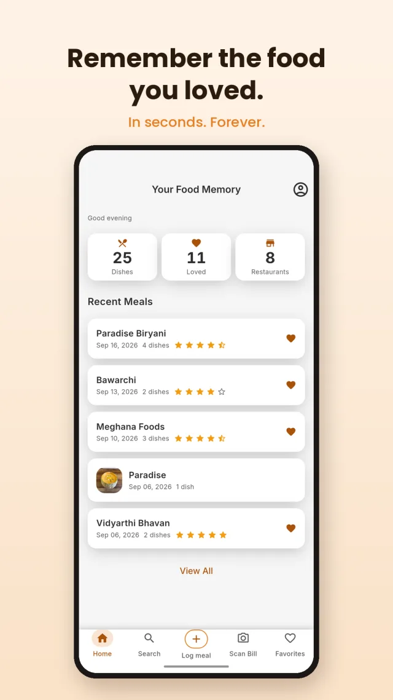
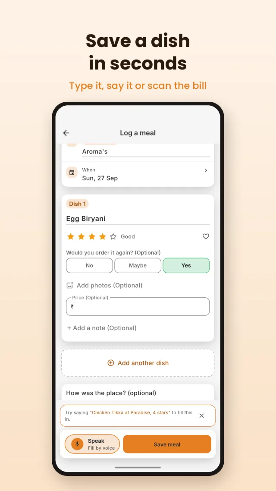
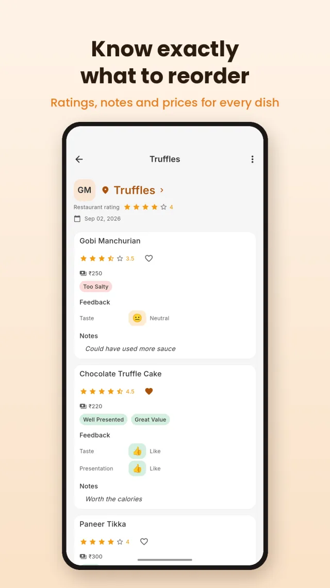
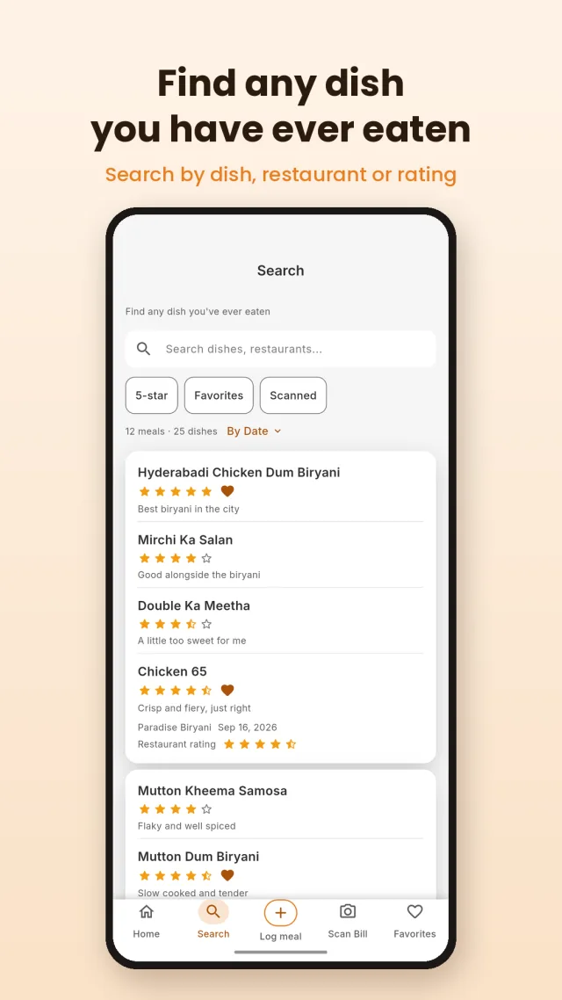
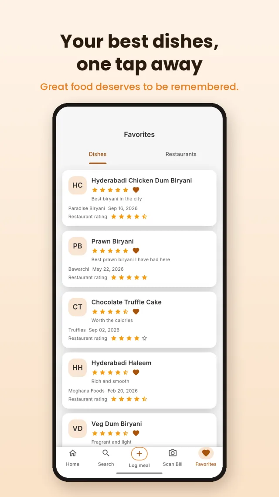
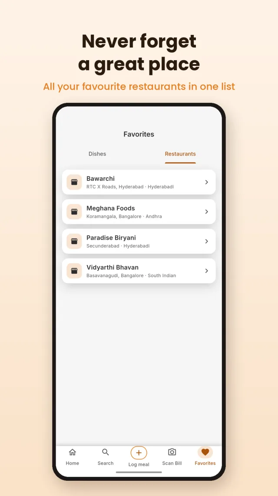

Food & drink
Foodprints: Food Memories
Type it, say it or scan the bill — log a meal in under 10 seconds and never lose track of what was actually worth reordering. Great food deserves to be remembered.

What it is
Your camera roll remembers how a dish looked. It doesn't remember if it was any good, what it was called, or whether you'd order it again. Foodprints is the missing layer — a food diary built to be used in the 10 seconds right after a great meal, not a journal you have to sit down and write.





How it works
Log it
Type the dish, say it out loud, or scan the bill and let Foodprints pull out the dish names and prices for you.
Rate it
Star rating, a quick note, a photo if you want one. Tag the restaurant so it's grouped with everything else you've had there.
Find it later
Search by dish or restaurant, or just check Favorites when you're trying to remember what to reorder.
Questions
Anything else? Email contact@offleg.com.
Is Foodprints free?
Yes, Foodprints is free to download and use on iOS and Android.
How does bill scanning work?
Point your camera at the bill and Foodprints reads the dish names and prices off it automatically, so you're not typing them in by hand.
Do I need an account?
You can start logging meals right away. Sign in when you want your food memory backed up and synced across your devices.
Can I log a meal without a photo?
Yes. A photo is optional — typing the dish name, a voice note, or a scanned bill is enough to save it.
Is it just for restaurants?
No. Log anything worth remembering — a restaurant meal, something home-cooked, or a dish from a trip.